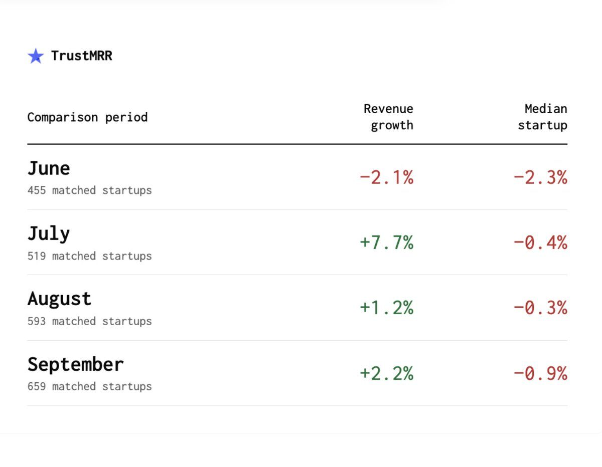
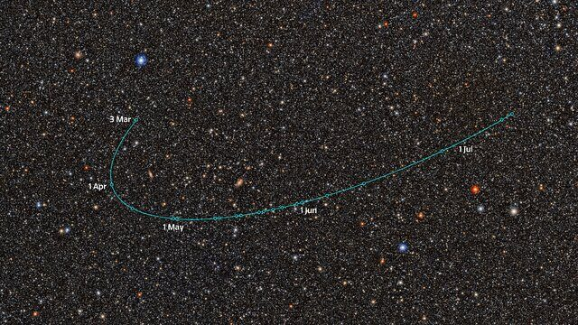

Dagens store historie er Israels valg, hvor hverken Netanyahu eller Eisenkot fik flertal, og de arabiske partier blev den store vinder. Derudover viser Google DeepMind en verdensmodel med lyd og tale, pladeselskaberne strammer grebet om Suno, og Marc Lou har regnet på, om SaaS er ved at dø. Sig fx »uddyb 3« for mere om en historie.
1Verden
Israels valg endte uafgjort: Netanyahu og Eisenkot hævder begge at have mandatet
Begge blokke står til omkring 51 af de 61 mandater, der skal til, og de arabiske partier gik markant frem.
Ifølge exit polls Rundspørger blandt vælgere, lige når de forlader stemmestedet, så man kan give et bud på resultatet, før stemmerne er talt op. Her gav de begge blokke omkring 51 mandater, men den endelige optælling kan flytte nogle stykker. fik både Netanyahus højrefløj og oppositionen under eks-forsvarschef Gadi Eisenkot omkring 51 mandater, langt fra de 61, der giver flertal i Knesset. Valgdeltagelsen var knap 78 %, den højeste siden 1999. De arabiske lister står til 17–18 mandater mod 10 før, og Ra'am-lederen Mansour Abbas er åben over for at samarbejde med Eisenkot, som har stillet fire betingelser for et samarbejde med Den Fælles Liste. Netanyahu, 77, vil have »en stærk højreregering« og antydede endnu en bombekampagne mod Iran sammen med Trump. Præsident Herzog vælger, hvem der først får seks uger til at danne regering, og både en mindretalsregering En regering, der ikke selv har flertal (her 61 af 120 mandater), men overlever, fordi partier uden for regeringen undlader at vælte den. Det kunne fx være en Eisenkot-regering, der støttes udefra af arabiske partier. og et nyt valg er mulige. Udfaldet påvirker Gaza, Iran-konflikten og hele regionen.
Google DeepMinds Genie 4 skaber virkelighedstro verdener med lyd og tale i realtid
Den nye verdensmodel En AI, der har lært, hvordan verden ser ud, lyder og opfører sig, så den kan simulere, hvad der sker bagefter, når du handler. Genie 4 bruger det til at lave scener, man kan bevæge sig rundt i og ændre, mens de kører. lader dig bevæge dig rundt i en genereret scene og styre den med tastatur og tekst, mens den kører.
Genie 4 er DeepMinds nyeste verdensmodel. Den genererer interaktive verdener i realtid, som man styrer med tastaturet og tekstbeskeder, og for første gang med indbygget lyd og dialog. Fysikken og personerne er mere realistiske end i Genie 3. Gemini 3.8 Flash kører med som en guidende agent, og DeepMind viser den sammen med robotmodellen Gemini 4 Argon, hvor Apptroniks humanoide robot Apollo spiller dam. Svaghederne er, at verdenerne glider ud over længere sessioner, og at tekst i billedet ofte fejler. Indtil videre er det et forskningspreview for udvalgte testere, men det kommer snart til Google AI Ultra og udviklere via Gemini API. Det peger mod spil, film og robottræning bygget ud fra en tekstbeskrivelse.
Pladeselskaberne går efter Sunos investorer: tidligere Menlo-chef skal afhøres om et slettet tweet
Universal og Sony vil bruge en investors »jeg lytter mest til Suno nu« som bevis på, at AI-musik æder markedet for rigtig musik.
En dommer har godkendt, at C.C. Gong, tidligere principal hos Suno-investoren Menlo Ventures, skal afhøres Her en såkaldt deposition: en vidneafhøring under ed uden for retssalen, som parterne kan bruge i sagen. C.C. Gong skal afhøres inden for 30 dage om, hvorfor hun skrev, at hun hellere ville lytte til Suno end Spotify. inden for 30 dage. Det handler om et tweet fra februar, hvor hun skrev, at hun havde flyttet det meste af sin lytning fra Spotify til Suno. Menlo og Lightspeed har fået stævninger Her retsbeslutninger (subpoenas), der pålægger nogen uden for selve sagen at udlevere dokumenter eller vidne. Pladeselskaberne har sendt dem til Menlo, Lightspeed og DistroKid., og Universal og Sony vil også have DistroKid til at udlevere tal fra sit AI-detektorværktøj om, hvor mange numre der markeres som AI, og hvor mange streams og royalties de får. Suno og Udio vil omvendt tvinge MLC til at udlevere data om streams. Kernen er Sunos fair use En regel i amerikansk ophavsret, der tillader brug af beskyttet materiale uden tilladelse i visse tilfælde. En af de vigtigste faktorer er, om brugen skader markedet for originalen. Derfor er en investors tweet om at have skiftet Spotify ud med Suno så interessant for pladeselskaberne.-forsvar: retten skal vurdere, om AI-musik skader markedet for den musik, den er trænet på. Udfaldet kan sætte rammen for, hvordan AI-musik må bruges og sælges.
Marc Lou: Er SaaS ved at dø? Den typiske startup på TrustMRR skrumper en smule hver måned
Han har analyseret 758 startups med over 1.000 dollar i MRR Monthly Recurring Revenue: den faste månedlige omsætning fra abonnementer. Analysen dækker kun startups, der får over 1.000 dollar ind om måneden., og medianen falder, men B2B Business-to-business: produkter, som virksomheder betaler for. B2C er produkter til almindelige forbrugere. I Marc Lous tal ligger B2B på 0 % i medianvækst, mens B2C ligger på −6,2 %. klarer sig bedre end B2C.

Billede: @marclou på X
Marc Lou har gennemgået 758 startups på TrustMRR med over 1.000 dollar i MRR. Den samlede omsætning steg i tre af de fire måneder fra juni til september, men medianvirksomheden Den virksomhed, der ligger i midten, hvis man stiller dem alle op efter vækst. Den samlede omsætning kan stige, fordi nogle få vokser meget, mens medianvirksomheden faldt hver måned fra juni til september. faldt hver eneste måned. Han beregner, at et fortsat fald svarer til cirka 11 % om året og 45 % på fem år. B2B-produkterne har en medianvækst på 0 %, mens B2C-produkterne ligger på −6,2 %. Momentum holder: 54 % af dem, der voksede mindst 5 % fra juni til juli, blev ved med at vokse, mod 35 % af dem, der faldt.
SK Hynix tjente rekordmange penge på AI-hukommelse og giver omkring 75 mia. dollar tilbage til aktionærerne
Driftsoverskuddet steg mere end syv gange på et år, og selskabet regner med mangel på hukommelseschips helt frem til 2030.
Den sydkoreanske chipproducent, en af de største leverandører af hukommelse til AI-datacentre, havde en omsætning på 104,6 billioner won i tredje kvartal, for første gang over 100 billioner og 328 % mere end året før. Driftsoverskuddet var 83,3 billioner won, en driftsmargin Hvor stor en del af omsætningen der er tilbage som overskud fra selve driften. 83,3 billioner won ud af 104,6 billioner i omsætning giver cirka 80 %, hvilket er usædvanligt højt for en fabriksvirksomhed. på cirka 80 %, mod 11,4 billioner året før. I år vil selskabet give omkring 100 billioner won, cirka 75 mia. dollar, tilbage til aktionærerne: mindst 30 billioner i udbytte og mindst 60 billioner i aktietilbagekøb Når et selskab køber sine egne aktier og annullerer dem, så hver tilbageværende aktie ejer en større del af firmaet. SK Hynix vil bruge mindst 60 billioner won på det i år.. Aktien steg op mod 8 % i løbet af dagen. SK Hynix forventer mangel på hukommelse helt frem til 2030, et tegn på at AI-opbygningen ikke bremser, og det er værd at følge for dine ARK-investeringer i AI og tech.
Anthropic: Claude har designet 35.000 antistoffer på en måned og skrevet myndighedspapirer på fire timer
Anthropic har arbejdet med seks biotekfirmaer og opkøbt en enmands-virksomhed inden for muskelsvind.
I et nyt opslag viser Anthropic tidlige resultater fra samarbejder med BigHat, Bristol Myers Squibb, Divergence, Enveda, Generate og The Column Group. Hos Divergence genererede Claude cirka 35.000 antistofdesign Forslag til proteiner, der kan binde sig til et bestemt molekyle i kroppen, som udgangspunkt for et lægemiddel. Claude lavede cirka 35.000 på en måned, som derefter skal sorteres og testes i laboratoriet. på en måned, og hos Generate blev en CAR-T-komponent 70 % kortere med omkring ti gange flere receptorer. Hos Enveda fangede Claude alle 11 fejl, mennesker havde fundet, plus 7 mere, og gennemgangstiden faldt med 89 %. Et myndighedsdokument tog fire timer i stedet for tre måneder i hånden. Anthropic har også købt Mithril Medicine, en enmands-virksomhed inden for muskelsvind, med mål om forsøg på mennesker tidligst sidst i 2028. Det meste er stadig prækliniske Forskning, der foregår i laboratoriet eller på dyr, før et lægemiddel testes på mennesker. De fleste af Claudes resultater er på det stadie, og Mithrils første forsøg på mennesker er tidligst sidst i 2028. resultater, men det viser, hvor meget én person med AI kan nå.
Første forsøg på mennesker med cellulær foryngelse: ingen alvorlige bivirkninger, og to ud af tre så bedre
Life Biosciences har givet ER-100, en behandling der »nulstiller« gamle celler, til tre patienter med grøn stær.
ER-100 bygger på delvis epigenetisk omprogrammering En metode, hvor man ikke ændrer selve DNA'et, men de kemiske markører, der styrer, hvilke gener der er tændt. Med de tre OSK-gener forsøger Life Biosciences at få celler i øjet til at fungere, som da de var yngre.: tre gener (OSK: OCT4, SOX2 og KLF4) føres ind i øjet med en indsprøjtning og slås til med antibiotikummet doxycyclin, for at få cellerne til at opføre sig yngre. De tre deltagere med grøn stær tålte behandlingen godt frem til dag 56, uden alvorlige bivirkninger, og det anbefales at gå videre med en højere dosis. Hos to af de tre blev mindst 28 % af målepunkterne i synsfeltet mere end 4 dB Decibel: her et mål for, hvor svagt et lys man kan se i et givent punkt af synsfeltet. Mere end 4 dB bedre i mindst 28 % af punkterne betyder, at to patienter kunne se svagere lys i en stor del af synsfeltet end før. bedre. Det er meget tidlige, åbne data uden kontrolgruppe, men det er første gang, at idéen om at spole celler tilbage er testet i mennesker, og det er et af de mest omtalte spor inden for længere levetid.
Finland og Norge ringede direkte til Putin for at presse på for fred
Opkaldet på 90 minutter er sjælden direkte kontakt mellem europæiske ledere og Kreml, forud for nye fredsforhandlinger i Abu Dhabi.
Finlands præsident Alexander Stubb og Norges statsminister Jonas Gahr Støre talte tirsdag med Putin i 90 minutter. Opkaldet var koordineret med Ukraine og USA og fulgte et møde i Oslo med Zelenskyj og USA's udsending Steve Witkoff, og de understregede, at de ikke talte på vegne af Europa. Putin gentog sit krav om at fjerne krigens »grundlæggende årsager«, og at Ruslands interesser skal tilgodeses »fuldt og uden betingelser«. Kreml nævnte samtidig en midlertidig våbenhvile omkring Kherson for at muliggøre en humanitær operation. Forhandlinger mellem USA, Ukraine og Rusland er planlagt i Abu Dhabi i begyndelsen eller midten af november. Det er et brud med Europas linje om at holde afstand til Kreml, tæt på Danmark.
ARK solgte for cirka 49 mio. dollar AMD og TSMC på to dage og købte Archer, Joby og forsvarsaktier.
Mandag og tirsdag solgte ARK aktier i AMD for cirka 29,4 mio. dollar og i TSMC for 19,9 mio. dollar gennem fondene ARKQ og ARKX. Samtidig købte de 1,32 mio. aktier i flytaxa-firmaet Joby for cirka 6,4 mio. dollar og Archer Aviation for omkring 7 mio. dollar over de to dage, plus Kratos, AeroVironment og Kodiak AI. Det er et velkendt ARK-mønster: tage gevinst på det, der er steget meget, og købe mere af det, de tror på langsigtet. Handlerne er i ARK's amerikanske ETF'er, ikke dine UCITS-fonde EU-regulerede fonde, som europæiske investorer kan købe. ARK's UCITS-udgaver har deres egne beholdninger, så de følger ikke nødvendigvis de amerikanske ETF'ers handler en til en., men de viser, hvilken retning Cathie Wood tænker.
OpenAI vil købe Googles AI-chips og gøre sig mindre afhængig af Nvidia
Ifølge The Information vil OpenAI købe Googles TPU'er Tensor Processing Units: Googles egne chips, der er specialbygget til AI-beregninger, som alternativ til Nvidias grafikchips (GPU'er). Ifølge rapporten vil OpenAI nu købe dem. for at få mere regnekraft.
The Information skriver, at OpenAI, der hidtil især har bygget på Nvidias GPU'er, planlægger at købe Googles egne AI-chips, TPU'erne. Hverken mængde eller pris er offentliggjort, og ingen af selskaberne har bekræftet det. OpenAI udvikler samtidig sin egen chip, »Jalapeno«, sammen med Broadcom. Det vil være en sejr for Google at sælge hardware til sin største AI-konkurrent, og et tegn på, at kampen om regnekraft er så hård, at alle leverandører er i spil.
Ny MacBook Pro med M6: 25 % hurtigere AI og op til 24 timers batteri
Apples nye 14-tommer kan forudbestilles fra i dag og er bygget til at køre sprogmodeller lokalt.
M6-chippen har 12 CPU-kerner og 12 GPU-kerner. Apple lover op til 30 % hurtigere grafik, 25 % hurtigere AI-arbejde og op til 1,3 gange hurtigere kompilering Når kildekode oversættes til et program, computeren kan køre. Apple siger, at M6 kompilerer projekter i Xcode op til 1,3 gange hurtigere end M5, så du venter mindre mellem ændring og test. i Xcode end med M5. Den har 16 GB hukommelse som standard og kan fås med op til 32 GB, op til 24 timers batteri og Wi-Fi 7. Den kommer med macOS 27 og den nye AI-udgave af Siri. Den kan forudbestilles fra i dag, 28. oktober, med levering fra 6. november; den danske pris har vi ikke set endnu. Det er relevant, hvis din Mac er ved at være gammel, og du vil køre lokale modeller ved siden af Claude Code.
Cursor lader dig tegne direkte på din app for at instruere agenten
Den nye »Annotate«-funktion i Cursors designtilstand gør det muligt at give visuelle instrukser i stedet for at beskrive alt i tekst.
Cursor har lanceret Annotate i sin designtilstand. Du kan redigere elementer, tegne direkte på siden og gennemgå designet i forskellige skærmstørrelser, så agenten får et visuelt prompt En instruktion til en AI givet med billeder, tegninger eller markeringer i stedet for kun tekst. I Cursor betyder det, at du kan tegne på din side, og agenten bruger tegningen som opgave. i stedet for en lang tekstbeskrivelse. Samtidig er Codex 0.165.0 udkommet med Vertex AI som udbyder og understøttelse af GPT-6.1 Terra, og Claude Code fik endnu en opdatering (v2.1.312). For udviklere, der selv står for frontenden, kan det spare mange runder med »flyt knappen lidt til venstre«.
Venstre smider Preben Bang Henriksen ud efter krisen om gødskningsloven
Han ville ikke love altid at stemme med flertallet i gruppen og fortsætter som løsgænger Et folketingsmedlem, der ikke tilhører noget parti, men beholder sin plads. Preben Bang Henriksen beholder sit mandat og stemmer nu kun efter egen overbevisning..
Preben Bang Henriksen, der har siddet 15 år i Folketinget, er smidt ud af Venstre, fordi han nægtede at love at stemme med flertallet i folketingsgruppen. Det skete efter, at han stemte imod gødskningsloven. Han fortsætter som løsgænger. Søren Gade forlod Folketinget i sidste uge, mens Matthiesen, Juel-Jensen og Heitmann har lovet at følge linjen. Samme dag gik SF's minister Signe Munk af på grund af stresssygemelding, og Karina Lorentzen Dehnhardt blev ny by-, land- og transportminister. Krisen svækker Venstre og Troels Lund Poulsens greb om partiet.
Musks AI-genererede »Odyssey« slagtes af anmelderne
Musk syntes, Nolans film var »for woke«, så han lavede sin egen med Grok Imagine. The Telegraph gav nul stjerner.
Første afsnit på syv minutter af Elon Musks AI-serie om Odysseen er udkommet på X. Den er lavet med xAI's videoværktøj Grok Imagine sammen med Wonder Studios og instruktøren Dev Walker, som svar på Christopher Nolans »The Odyssey«, som Musk kaldte »for woke«. The Telegraph gav nul ud af fem stjerner, og The Guardian gav én stjerne og skrev, at ingen mener, at AI har kunstnerisk værdi, kun økonomisk. Det er et pejlemærke for, hvor langt AI-video er fra at kunne bære en fortælling, og hvordan publikum reagerer, når AI skal erstatte kunstnere.
Rubin-teleskopet har fundet en mulig ny dværgplanet ude bag Pluto
2026 ED138 kan være op til 1.500 km i diameter og en af de største genstande, der nogensinde er fundet i det område.

Billede: Rubin Observatory/NOIRLab
Vera C. Rubin-observatoriet i Chile har fundet sin første dværgplanetkandidat En genstand, der ser ud til at være stor nok til at være en dværgplanet, altså rund af egen tyngdekraft, men hvis størrelse endnu ikke er målt præcist. ED138 anslås til 600–1.500 km, og først en præcis måling kan afgøre det.. Den ligger cirka 46 gange så langt fra Solen som Jorden, mens Pluto i gennemsnit ligger 40 gange så langt væk. Den anslås at være 600–1.500 km i diameter, hvilket gør den til en af de største kandidater bag Neptun. Den blev overset i årevis, fordi den ligger foran Mælkevejens tætte stjernefelt. Astronomen Matthew Holman fandt den i 30 observationer over 20 nætter fra marts til juli, og ældre billeder viser den helt tilbage til 2016. Bliver den bekræftet, kommer den på listen sammen med Pluto, Ceres, Eris, Haumea og Makemake.
Platformer (Casey Newton) – Skarp, daglig dækning af Meta, YouTube, TikTok og X: platformenes regler og betalinger til skabere.
Benedict Evans – Ugentligt nyhedsbrev, der sætter AI- og tech-nyhederne i økonomisk perspektiv, uden hype.
Eric Topol: Ground Truths – En af de mest respekterede læger på nettet gennemgår ny forskning i sundhed, aldring og AI i medicin, nøgternt og med kilder.